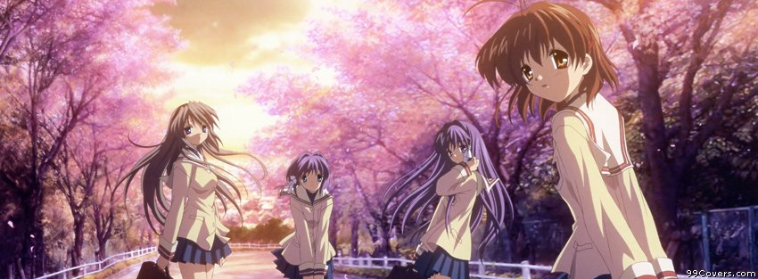
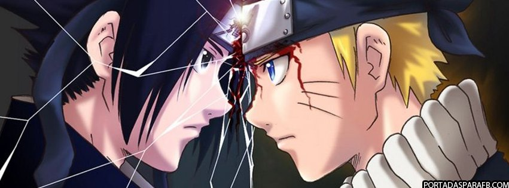

- 
-

- 
Recomendaciones
Estas recomendaciones son especificamente hechas a base de gustos personales de los dueños de pagina.
Chichana mune no tokimeki

Trata sobre chicas de 12 años que sueñan con tener su "amor ideal", pero los chicos de su escuela no tienen nada encantador. Hasta que todos son grupados en parejas para practicar un instrmento.
A partir de ahi, pasan cosas que las llevara a su chico ideal.
Lo que mi me gusto en particular son ls situaciones amorosas que enfrentan y que las llevan a madurar.
Kaleido Star

Es un anime viejo, tiene mas de 50 episodios, se trata sobre una chica joven que adora el circo y tiene el sueño de convertirse en la proxima estrella de "kaleido". Al principio para lograrlo pasa uchas dificultades.
Este anime me gusto principalmente porque muestran distintas situaciones que remarcan sobre la motivacion, la inspiracion de auto superarse.
Akkun to Kanojo

Trata sobre la relacon de dos jovenes que son polos opuestos, ella es transparente mientras que el oculta sus emociones siendo frio. Pero se entienden.
Lo bueno de este anime son las diferentes reacciones del chico, como los demas los aceptan y lo observan es lo mas comico de la serie.